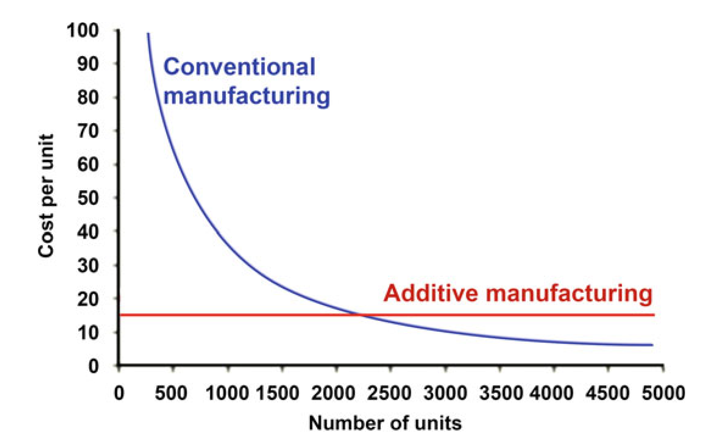

Выбор технологии как задача принятия решений. Экономика аддитивного производства
Для одного краниального имплантата сравнивают печать и фрезерование. Как исключить неподходящие маршруты и решить, какой из оставшихся стоит проверить на пилоте?
После лекции вы сможете
- отличить обязательное условие приемки от свойства, по которому сравнивают уже допустимые маршруты;
- рассчитать баллы допустимых маршрутов и проверить, сохраняется ли лидер при смене весов;
- составить смету на годную деталь и объяснить, какой результат пилота требует пересчета, а какой исключает маршрут.
Введение
Кейс А: краниальный имплантат. Хирург просит изготовить изделие по данным компьютерной томографии к операции через две недели. Если дата назначена, обещания «от двух до трех недель» недостаточно: нужен подтвержденный срок выдачи. В базовом сценарии для матрицы дата еще не назначена. Поэтому более быстрая выдача дает преимущество, а не служит условием допуска.
Какое решение можно принять, зная лишь марку сплава? Деталь из титана можно выфрезеровать или получить послойным плавлением порошка. Материал сам по себе не говорит, удастся ли обработать внутренний канал, сколько времени займет изготовление и как проверить результат.
При выборе имплантата последствие ошибки зависит от того, когда ее обнаружили. Если деталь не проходит контроль до выдачи, ее не выпускают; изготовление замены увеличивает срок. Поэтому условия приемки полезно согласовать до выбора машины: какие размеры проверят после обработки, как подтвердят очистку и как свяжут результаты с конкретным изделием.
Из нескольких допустимых маршрутов нужно выбрать один для пилота. Гибсон и соавторы разделяют задачу на проверку осуществимости и последующее сравнение прошедших проверку вариантов (с. 430–434) [1]. Для первого этапа понадобятся требования к изделию, для второго — оценки маршрутов и предпочтения заказчика. Смета покажет, какие из предварительных оценок нужно уточнить.
Кейс краниального имплантата является учебным. Его числа, сроки и маршруты нужны для того, чтобы показать методику выбора; они не являются медицинской рекомендацией, не заменяют оценку конкретного пациента и не доказывают пригодность материала или процесса для клинического применения.
Подробнее: Как читать источники
Гибсон и Эшби описывают методы выбора [1, 2]. Справочник материалов дает средние свойства отожженного сплава [3]. В книге Diegel приведены примеры ставок [4] и пересказ опроса сервисных бюро [5]. Техническое руководство FDA [6] и стандарт биологической оценки [7] объясняют, какие вопросы рассматривать. Эксперимент с PEEK [8] показывает возможность изготовить образцы, но не устанавливает клинический исход. Баллы матрицы и смета ниже заданы для учебной задачи.
От требований к критериям
≈ 13 мин · слайды 3–12
С чего начинается выбор: с принтера или с требований?
Назовите условие, при нарушении которого не поможет даже низкая цена.
Начните с требований к изделию. Если после стерилизации шаблон выходит за допуск, маршрут исключают до сравнения цен.
Выбор начинается не с принтера и не с материала, а с перечня требований. Раздел объясняет, как требования превращаются в критерии с метриками и порогами, чем жесткое ограничение отличается от мягкой цели и почему медицинское изделие добавляет к прочности целый набор условий.
1.1. Решение состоит из вариантов, исходов и предпочтений
Вариант в этой задаче является парой «процесс и материал»: порошковый синтез титанового сплава, фотополимеризация полимерной смолы, фрезерование заготовки из полиэфирэфиркетона (PEEK). Один и тот же процесс с разными материалами дает разные варианты, и рассматривать процесс отдельно от материала бессмысленно. Часть таких пар затем отсеивается по назначению и безопасности. Гибсон и соавторы называют пары допустимыми комбинациями материала и процесса (с. 433) [1].
Исход характеризует результат выбора: например, отклонение посадочной поверхности от модели или срок до выдачи. Его можно описать числом с единицей измерения или словесным уровнем сложности. Для сравнения нужны одинаковые условия измерения и заранее определенные уровни шкалы.
Предпочтение задает важность исхода для конкретной задачи. Формально его выражают весом критерия, а веса нормируют так, чтобы их сумма равнялась единице. Для простых задач веса назначают прямо, для сложных применяют парные сравнения: спрашивают, насколько один критерий важнее другого, и из ответов выводят согласованный набор весов (с. 431) [1].
Спор «мне нравится фотополимеризация» является попыткой пропустить третий элемент. Пока предпочтения не названы, любые оценки остаются равноправными, и обсуждение сводится к вкусам. Матрица не делает решение объективным, она делает его проверяемым: видно, какие оценки и какие веса привели к ответу.
Порядок этапов тоже входит в метод. Сначала определяют допустимые варианты, затем ранжируют их. Гибсон называет эти этапы определением осуществимости и собственно выбором (с. 431–434) [1]. Если поставить ранжирование первым, в матрицу попадут варианты, которые нельзя применять в принципе, и лучший балл может получить недопустимый маршрут.
1.2. Требование, критерий, метрика и порог
Требование формулируют словами заказчика или нормативного документа: изделие должно выдерживать стерилизацию, садиться на кость, быть изготовлено к операции. Оно может быть числовым ограничением («не более 5 дней»), условием «да/нет» («материал соответствует спецификации») или еще неясным пожеланием («должно быть надежно»). Для сравнения требование переводят в критерий: выделяют измеримое свойство, задают метрику и границу. Неясное пожелание сначала уточняют; числовое ограничение и условие «да/нет» уже проверяемы, хотя и по-разному. Метрика задает единицу и способ измерения, порог задает границу допустимого.
Кейс Б: хирургический шаблон. В таблице 1 показан другой заказ. Фразу «шаблон должен точно садиться на кость» уточнили: отклонение посадочной поверхности от модели не должно превышать 0,2 мм. Для биологической безопасности одного числа недостаточно: заранее определяют, для какого контакта и по каким критериям будут оценивать риск.
| Требование | Критерий | Метрика | Порог |
|---|---|---|---|
| Паровая стерилизация | стойкость изделия | проверка размеров и свойств после заданного цикла при 134 °C | размеры и свойства остаются в допуске изделия |
| Контакт с тканью | биологическая безопасность | оценка готового изделия по виду и длительности контакта по плану оценки | критерий приемлемости задан в плане биологической оценки по ISO 10993-1 |
| Посадка на кость | точность | отклонение, мм | не больше 0,2 |
| Срок операции | срок изготовления | дни | не больше 5 |
| Бюджет | цена | рубли | не больше 20 000 |
Цикл при 134 °C, допуск 0,2 мм, пять дней и 20 000 рублей относятся к условию о шаблоне, а не к имплантату и не к универсальному нормативу. После заданного цикла проверяют размеры и свойства изделия. Предложение дороже 20 000 рублей исключают; среди уложившихся в бюджет все еще можно предпочесть более дешевое. В кейсе А фиксированной даты нет: срок остается предпочтением в матрице.
1.3. Жесткие ограничения отсекают, мягкие цели ранжируют
Эшби описывает проектирование как поиск ответа на три вопроса: какую функцию выполняет компонент, что требуется максимизировать или минимизировать, каким условиям необходимо соответствовать (табл. 5.1, с. 69) [2]. Функция отвечает на вопрос «что делает деталь». Цель отвечает на вопрос «что улучшаем». Ограничения отвечают на вопрос «что нельзя нарушать».
В примере Эшби жесткость и прочность могут быть жесткими ограничениями, а допустимая стоимость подлежит обсуждению (с. 69–70) [2]. Для хирургического шаблона применим это различие к стойкости после стерилизации: если изделие после заданного цикла не сохраняет форму в допуске, низкая цена не вернет маршрут в число допустимых.
Так различаются два вопроса. «Выдерживает ли шаблон заданный цикл в пределах допуска?» — вопрос приемки с ответом «да» или «нет». «Какой из выдержавших цикл вариантов дешевле?» — вопрос ранжирования. Низкие затраты непригодного маршрута не должны влиять на второе решение.
1.4. Требования медицинского изделия шире прочности
В таблице 11.10 справочника Callister для отожженного Ti-6Al-4V приведены средние значения: прочность при растяжении 947 МПа, предел текучести 877 МПа и удлинение 14 % при базе 50 мм (с. 369) [3]. Обозначение сплава указывает номинальные массовые доли алюминия и ванадия: около 6 и 4 %. Справочные средние нельзя использовать как нижние приемочные пределы напечатанного имплантата или как доказательство его усталостной прочности.
Для биологической оценки отдельно указывают, какие ткани контактируют с готовым изделием, каков характер контакта и сколько он длится [7]. Например, в одной задаче речь может идти о длительном контакте имплантата с костью, в другой — о кратком контакте инструмента при операции. Название «наружный протез» само по себе не задает длительность контакта.
Стерилизация добавляет термическое и химическое воздействие, которое сама печать не создает. Если материал не выдерживает выбранный режим, вариант выбывает, какими бы ни были его точность и цена. Тот же режим может изменить геометрию тонкостенной детали, поэтому проверяют не только материал, но и изделие после стерилизации.
Внутренние каналы и шероховатые поверхности могут удерживать остатки материала. Для такого изделия нужны подходящий способ очистки и проверка результата. Запись о партии сырья, параметрах процесса и контроле связывает наблюдение с конкретным изделием; одна запись не доказывает повторяемость процесса.
Повторяемость связывает единичное изделие с серией. Индивидуальный имплантат изготавливают один раз, но процесс должен быть описан так, чтобы следующее изделие того же назначения получалось с теми же свойствами. Поэтому в перечень требований попадают не только свойства детали, но и свойства процесса: параметры построения, ориентация, поддержки, режим постобработки.
1.5. Почему выбор по материалу не работает
Заблуждение «технологию выбирают по материалу» опирается на реальную связь: не каждый процесс работает с каждым материалом. Порошковый синтез требует порошка, пригодного для выбранного процесса, с оговоренными в спецификации сырья гранулометрией и формой частиц; экструзия расплавленной нити требует филамента, хотя существуют экструдеры с подачей гранул [9]; фотополимеризация требует жидкой смолы. Материал действительно ограничивает список процессов, но не определяет выбор внутри списка.
Деталь из титана можно получить плавлением порошкового слоя, фрезерованием заготовки или литьем; напыление наносит покрытие и само по себе не создает цельный имплантат. Во всех случаях материал один, а точность, шероховатость, минимальная толщина стенки, срок и цена разные. Процесс задает структуру поверхности и термическую историю, от которых зависят усталостные свойства. Поэтому материал входит в описание маршрута, а не заменяет сравнение.
Если заказчик требует конкретный состав, это ограничение проверяют до сравнения. Если допускаются разные материалы, сопоставляют свойства и затраты для каждого сочетания материала и процесса.
Паспорт сырья подтверждает его идентичность или характеристики, но не безопасность готового изделия. Данные ранее испытанного образца можно использовать, обосновав сопоставимость состава, геометрии, обработки, стерилизации и контакта с организмом. Для различий, не охваченных прежними данными, нужны дополнительные доказательства [10].
Итог раздела. Требования задают критерии, метрики и пороги, жесткие ограничения отсекают варианты до ранжирования, а материал входит в описание маршрута и не заменяет сравнения.
Мини-тест раздела
Взвешенная матрица
≈ 16 мин · слайды 13–23
Почему разные веса могут дать разных лидеров?
Свойства вариантов остались прежними. Что изменилось у заказчика?
Изменился приоритет критериев. Чем больше вес реализуемости формы, тем сильнее преимущество по этому критерию влияет на итог.
Допустимые варианты остались, и их нужно сравнить. Раздел объясняет устройство взвешенной матрицы, нормирование оценок, назначение весов, проверку на чувствительность и матрицу Пью (Pugh) как более грубый инструмент того же назначения.
2.1. Что делает матрица
Во взвешенной матрице каждому маршруту соответствует набор оценок, а каждому критерию назначен вес. В таблице 2 маршруты расположены по столбцам, критерии по строкам. Чтобы найти итог маршрута, каждую оценку в его столбце умножают на вес соответствующей строки и складывают произведения. Видно, какой вклад внесли оценка и назначенный ей вес.
Матрица не заменяет инженерное суждение и не создает объективности. Она создает протокол: коллега, не согласный с выводом, может изменить вес или оценку и показать, где решение меняется. Такой спор продуктивен, потому что касается конкретного числа, а не вкуса. Гибсон подчеркивает, что метод полезен именно записью точек зрения и последующим анализом чувствительности (с. 433) [1].
Число строк само по себе ничего не говорит о надежности выбора. При добавлении критерия проверьте, дает ли он новое основание для сравнения и какой вес останется у уже учтенных свойств. В §2.7 разберем, когда копирование строки оставляет итог без изменений.
2.2. Нормирование и взвешенная сумма
Отклонение в миллиметрах, цену в рублях и срок в днях нельзя непосредственно складывать. Нормирование снимает размерность и согласует направление шкал. Чтобы сложение имело смысл для заказчика, нужно еще установить, как он оценивает разницу между уровнями каждого свойства.
Для критерия, который нужно максимизировать, нормированная оценка равна отношению разности оценки и минимума к размаху шкалы:
r = (a − aₘᵢₙ) / (aₘₐₓ − aₘᵢₙ)
Для критерия, который нужно минимизировать, формула зеркальна:
r = (aₘₐₓ − a) / (aₘₐₓ − aₘᵢₙ)
Здесь a является оценкой варианта по критерию, aₘᵢₙ и aₘₐₓ задают границы шкалы, r лежит между нулем и единицей. Это формулы 15.1 и 15.2 Гибсона (с. 434) [1]. Если aₘₐₓ = aₘᵢₙ, размах равен нулю: критерий не различает варианты, и делить на ноль нельзя. Такой критерий исключают из матрицы или всем вариантам назначают одинаковый балл с оговоркой, что он не влияет на сравнение.
Итоговый балл варианта равен взвешенной сумме нормированных оценок: M = w₁·r₁ + w₂·r₂ + … + wₙ·rₙ, где w обозначает вес критерия, а сумма весов равна единице. В обозначениях Гибсона это формула 15.3 (с. 434) [1]. Если все оценки нормированы, итог тоже лежит между нулем и единицей, но не является долей качества изделия: это результат соглашения о шкале.
В этом упражнении шаг от 1 к 2 баллам считаем равноценным шагу от 4 к 5 по тому же критерию. Вес показывает, насколько для заказчика важен переход от худшего к лучшему уровню данного критерия по сравнению с такими переходами по другим критериям [11]. Это договоренность о предпочтениях: индекс 0,8 не означает «80 % качества изделия».
Проверим формулу на учебном сроке. Пусть допустимый срок выдачи лежит от одной до трех недель, и меньшее значение лучше. Срок в две недели дает r = (3 − 2) / (3 − 1) = 0,50: вариант находится ровно посередине шкалы. Срок в одну неделю дает единицу, срок в три недели — ноль. Это пример нормирования измерения в неделях. В таблице 2 сроки заданы интервалами, а баллы для них назначены по другому, явно указанному правилу.
В учебных матрицах часто используют пятибалльную шкалу для всех критериев. Тогда нормирование не обязательно: все оценки уже в одной шкале и направлены в одну сторону, а взвешенная сумма дает средний балл от 1 до 5. Именно так получаются итоги 3,55, 3,85 и 2,85 в следующем разделе. Смешивать шкалы в одной матрице нельзя: если точность оценена в миллиметрах, а цена в рублях, без нормирования итог теряет смысл. Меньшая цена и большая точность одинаково желательны и потому получают высокие баллы. Если в одном столбце пять означает лучший результат, а в другом худший, направления шкал нужно согласовать до сложения.
2.3. Матрица допустимых маршрутов
В кейсе А к сравнению допускают только маршруты, для которых по условию выполнены обязательные требования. Для предложенных смолы и полиамидного порошка таких данных нет. Это основание исключить эти варианты из данного сравнения, но не все изделия из смол и полиамидов. В частности, в HP Multi Jet Fusion полимерный порошок распределяют слоем, а печатающая головка наносит на него жидкие агенты [12]. Название процесса не подтверждает пригодность изделия к имплантации.
По условию базового сценария нужную форму можно получить тремя способами: лазерным сплавлением порошка Ti-6Al-4V (PBF-LB/M), фрезерованием PEEK и фрезерованием Ti-6Al-4V. Поднутрение — участок, недоступный инструменту с выбранного направления. Если к нему можно подойти после переустановки заготовки, маршрут сохраняют и учитывают сложность. Если обязательную поверхность цельной детали нельзя обработать ни при одной разрешенной установке, маршрут исключают до матрицы.
В таблице 2 высокий балл всегда лучше. Для формы он означает более простое получение нужной геометрии, для постобработки — меньший риск дефекта или непредвиденной повторной операции. Цена в таблице предварительная: ниже мы проверим смету только печати; для сравнения по цене понадобятся и предложения по обоим фрезерованным маршрутам.
| Критерий | Вес | PBF-LB/M, Ti | Фрезерование PEEK | Фрезерование Ti |
|---|---|---|---|---|
| Точность | 0,25 | 4 | 5 | 5 |
| Реализуемость формы | 0,20 | 5 | 2 | 2 |
| Срок | 0,20 | 3 | 4 | 2 |
| Цена | 0,25 | 3 | 4 | 2 |
| Риск постобработки | 0,10 | 2 | 4 | 3 |
| Взвешенный итог | 1,00 | 3,55 | 3,85 | 2,85 |
Баллы за срок в таблице 2 получены по верхней границе учебного диапазона: одна неделя дает 4, две недели — 3, три недели — 2. Это правило перевода условия задачи в балл, а не измеренная скорость процессов. Для PBF-LB/M диапазон 1–2 недели дает верхнюю границу 2 недели и балл 3, для фрезерования PEEK одна неделя дает 4, для фрезерования титана 2–3 недели дают 2.
Для строки «Точность» зададим учебные результаты одного и того же контроля: максимальное абсолютное отклонение от цифровой модели составляет 0,08 мм для печати, 0,04 мм для фрезерования PEEK и 0,05 мм для фрезерования титана. Отклонению до 0,05 мм включительно присвоим 5 баллов; свыше 0,05 до 0,10 мм — 4; свыше 0,10 до 0,15 мм — 3; свыше 0,15 до 0,20 мм — 2; свыше 0,20 мм — 1. Отсюда оценки 4 / 5 / 5. Это шкала предпочтений среди уже допустимых вариантов, а не допуск имплантата.
Оценки формы, цены и риска назначены экспертно. Для них нет исходных измерений и полной шкалы перевода. Новая смета может стать основанием пересмотреть балл цены; без согласованного правила из нее нельзя получить новый балл однозначно.
Смотреть нужно прежде всего на строки. PEEK выигрывает у PBF по точности, сроку, цене и риску постобработки; PBF-LB/M выигрывает по реализуемости формы; фрезерование титана уступает PEEK по сроку и цене; по точности и реализуемости формы оценки равны, а по риску постобработки фрезерование титана занимает промежуточное положение: лучше PBF, но хуже PEEK. Разница между PEEK и PBF составляет 0,30 балла, между PBF и фрезерованием титана — 0,70 балла. Это не «половина шага» шкалы: итог является взвешенной суммой, поэтому его изменение не равно изменению одной оценки.
Проследим расчет для PEEK: 5 × 0,25 + 2 × 0,20 + 4 × 0,20 + 4 × 0,25 + 4 × 0,10 = 1,25 + 0,40 + 0,80 + 1,00 + 0,40 = 3,85. Тем же способом получаются 3,55 для печати титана и 2,85 для его фрезерования. Все итоги остаются в шкале 1–5.
Разрыв 0,30 балла между PEEK и печатью — следствие учебных оценок и выбранных весов. Если титан станет обязательным, фрезерование PEEK исключат по составу. При прежней геометрии останутся два титановых маршрута, и их по-прежнему нужно сравнить.
2.4. Откуда берутся веса
Прежде чем спрашивать заказчика о весах, задайте границы каждого критерия. Речь идет, например, о переходе от худшей допустимой точности к лучшей и от трех недель ожидания к одной. Спросите, какой из этих двух переходов ценнее и насколько. Вопрос «что важнее, точность или срок?» без диапазонов не дает такого ответа.
Для простой задачи веса можно согласовать непосредственно; Гибсон также описывает парные сравнения (с. 431) [1]. Запишите, кто дал оценки, какие диапазоны сравнивал и почему выбрал эти веса. При смене приоритетов это позволит изменить предпочтения, не меняя данные о самих маршрутах.
Полезно проверить веса на здравый смысл до подсчета итогов. Если вес одного критерия больше суммы весов двух других, изменение на один балл по этому критерию весит больше, чем одновременное изменение на один балл по двум другим. Это допустимо, но должно быть произнесено вслух: сравнение идет не в «натуральных» единицах, а в баллах шкалы. Если вес критерия равен нулю, критерий не участвует в решении, и его место — в списке проверок, а не в таблице. Если все веса равны, матрица превращается в среднее с равными предпочтениями; это допустимый и явно названный выбор, а не отсутствие предпочтений.
Веса зависят от сценария применения. Для имплантата, который останется в теле на годы, биосовместимость является порогом, а не весом. Для модели, по которой хирург планирует операцию, важен другой набор критериев, и матрица имплантатов к ней не применяется. Одна и та же матрица с разными весами описывает разные задачи, и это нормально, если сценарий назван.
2.5. Где меняется лидер матрицы
Анализ чувствительности отвечает на вопрос, насколько итог зависит от весов. Сравнивают не одну измененную цифру, а полные векторы весов: в каждом векторе сумма равна единице, поэтому прибавка к одному весу компенсируется убавками у других. Затем смотрят, меняется ли порядок вариантов. Если лидер меняется при малом сдвиге, решение называют хрупким: оно держится на договоренности о весах, а не на свойствах вариантов. Если порядок сохраняется при заметных изменениях, вывод устойчив.
Оценки маршрутов в таблице 3 прежние. Вес формы вырос с 0,20 до 0,55; чтобы сохранить сумму 1, снижены веса точности (0,25 → 0,15), срока (0,20 → 0,10) и цены (0,25 → 0,10). Только вес риска остался равным 0,10.
Подробнее: Пересчет второго вектора
Для PBF-LB/M сумма равна 4 × 0,15 + 5 × 0,55 + 3 × 0,10 + 3 × 0,10 + 2 × 0,10 = 4,15. Для PEEK и фрезерованного титана теми же весами получаем 3,05 и 2,55.
| Критерий | Базовый вес | Второй вес | PBF-LB/M, Ti | Фрезерование PEEK | Фрезерование Ti |
|---|---|---|---|---|---|
| Точность | 0,25 | 0,15 | 4 | 5 | 5 |
| Реализуемость формы | 0,20 | 0,55 | 5 | 2 | 2 |
| Срок | 0,20 | 0,10 | 3 | 4 | 2 |
| Цена | 0,25 | 0,10 | 3 | 4 | 2 |
| Риск постобработки | 0,10 | 0,10 | 2 | 4 | 3 |
| Итог: база / второй | 1,00 | 1,00 | 3,55 / 4,15 | 3,85 / 3,05 | 2,85 / 2,55 |
Между этими сценариями лидер сменился: вместо PEEK первое место заняла печать. Чтобы понять, может ли небольшая корректировка весов изменить решение, найдите границу равенства результатов.
Вычтем из оценок печати оценки PEEK по тем же строкам: −1, +3, −1, −1, −2. Обозначим вес формы через f, вес риска через r. На остальные три строки приходится 1 − f − r, и каждая дает разность −1. Разность взвешенных итогов равна 3f − 2r − (1 − f − r) = 4f − 1 − r. При r = 0,10 она равна нулю, когда f = 1,10 / 4 = 0,275. При меньшем весе формы выше балл PEEK, при большем — печати. Устойчив ли выбор, если заказчик считает приемлемым диапазон 0,18–0,25? А если диапазон 0,25–0,30?
Подробнее: Проверка одного критерия
Предел влияния одного критерия удобно проверить, присвоив ему вес 1, а остальным 0. Если оставить только цену, в таблице 2 победит фрезерование PEEK; тот же результат получится, если оставить только срок. При промежуточных весах этого вывода недостаточно: даже самый большой отдельный вес могут перевесить несколько других. Чтобы судить об устойчивости выбора, сравнивают итоги при полных наборах весов, которые заказчик действительно считает приемлемыми.
2.6. Матрица Пью (Pugh)
Когда времени на веса нет, применяют матрицу Пью (Pugh). Выбирают базовый вариант, который уже применяется, и сравнивают с ним каждый новый вариант по каждому критерию. Лучше базового обозначают плюсом, хуже минусом, одинаково нулем. Сумма плюсов и минусов показывает, стоит ли вообще рассматривать новый вариант.
Метод быстрее взвешенной матрицы и не требует нормирования. Платой за скорость является грубость: плюс не говорит, насколько вариант лучше, а минус не говорит, насколько хуже. Два варианта с одинаковой суммой могут различаться по цене ошибки в разных критериях. Поэтому Пью (Pugh) годится для быстрой сортировки уже допущенных вариантов и для первого разговора с заказчиком, а не для отсева по обязательным требованиям и не для финального обоснования. Отсев выполняется до Пью, по порогам, которые нельзя компенсировать плюсами.
Базовый вариант задает систему отсчета. В примере из таблицы 2 базой является фрезерование титана, а с ним сравнивают PBF-LB/M. По точности PBF получает минус, по реализуемости формы — плюс, по цене — плюс. По этим трем критериям положительных отличий два, отрицательное одно; но знаки не показывают, насколько велико отличие и насколько оно важно. Чтобы включить PEEK, его сравнивают с той же базой, фрезерованным титаном. Смена базы меняет картину, поэтому базу называют явно. Смоляная модель для планирования базой в матрице имплантатов не служит: она не является имплантатом и сравнивается отдельно.
2.7. Сколько критериев нужно
Не путайте зависимость показателей с повторным измерением одного свойства. Точность размера и минимальный воспроизводимый элемент связаны с возможностями процесса, но означают разное: тонкая стенка может получиться с систематическим отклонением от номинала.
Если строку с весом 0,15 скопировать и дать двум одинаковым строкам по 0,075, их суммарный вклад останется прежним. Если обеим оставить по 0,15, отняв дополнительные 0,15 у других критериев, вклад свойства удвоится. Сменится ли лидер, зависит от остальных баллов и весов.
В таблице 2 риск постобработки отделен от цены и срока не случайно. Если цена и срок уже включают операции после построения, отдельный критерий «стоимость постобработки» посчитал бы те же деньги дважды. Поэтому в матрице стоит именно риск: неопределенность того, что операция потребует больше времени, даст дефект или потребует повторной обработки. Такой критерий не дублирует цену, а описывает вероятность ее изменения.
Гибсон отмечает, что связанность критериев затрудняет выбор: свойства и стоимость зависят друг от друга, и разделить их удается не всегда (с. 438) [1]. Сложная геометрия увеличивает время построения и цену, прочность зависит от ориентации и пористости, биосовместимость зависит от постобработки. Матрица с независимыми критериями является упрощением, и это упрощение нужно признавать.
Практическое правило простое: в матрицу включают критерии, по которым варианты действительно различаются и по которым у заказчика есть предпочтение. Остальные выносят в текстовое описание или в список проверок. Матрица из пяти-шести критериев, понятная заказчику, полезнее матрицы из двадцати критериев, в которой никто не может объяснить веса.
Итог раздела. Взвешенная матрица делает оценки и веса явными, но не создает объективности; ее итог проверяют анализом чувствительности, а число критериев ограничивают теми, которые различают варианты.
Мини-тест раздела
Экономика аддитивного производства
≈ 20 мин · слайды 24–37
Почему тираж меняет стоимость при печати и литье по-разному?
Разделите затраты на запуск и затраты на каждую деталь.
При литье стоимость одной формы распределяется на весь тираж. При печати детали могут делить время построения, но на каждую по-прежнему нужны материал и постобработка.
Матрица сравнивает свойства, но не считает деньги. Раздел разбирает модель затрат аддитивного производства, показывает, почему в этой модели стоимость детали падает с тиражом слабее, чем при литье, и доводит расчет до сметы краниального имплантата для тиража 1 и тиража 20.
3.1. Постоянные и переменные затраты
Постоянными называют затраты, которые не зависят от числа изготовленных деталей в пределах рассматриваемого периода: покупка машины, помещение, подготовка производства. Переменными называют затраты, которые растут с каждой деталью: материал, время работы машины, ручная обработка. Деление условно, потому что одна и та же статья может попасть в разные группы в зависимости от горизонта планирования.
При литье разовые затраты на форму распределяются между изделиями. В линейной модели с неизменными затратами на один цикл удельные затраты по мере роста тиража приближаются к затратам на очередную деталь.
При печати не нужна литейная форма, но могут потребоваться приспособления и подготовка программы. Стоимость покупки машины относят к продуктивным часам расчетного периода. На конкретное построение приходится ставка за час, умноженная на время занятия машины; уже эту сумму распределяют между деталями загрузки. Материал и ручную обработку в нашей смете считают отдельно. Если каждую заготовку печатают отдельно по шесть часов, двадцать заготовок потребуют 120 машино-часов. Для совместной загрузки время определяют по раскладке, а не умножением на двадцать.

На рисунке 1 по горизонтали отложено число изделий, по вертикали — затраты на одно изделие без указания валюты. На синей кривой затраты на форму распределяются между изделиями. Для красной линии постоянные удельные затраты печати заданы как допущение; в таблице 4 они уже зависят от загрузки платформы.
В пределах схемы печать дешевле слева от пересечения, традиционный маршрут — справа. По делениям можно оценить точку пересечения примерно в 2,2 тыс. изделий. В §3.7 такое же число получается точно, но из отдельной модели с известными ставками. По рисунку эти ставки восстановить нельзя.
Для простой детали без внутренних полостей фрезерование из заготовки может оказаться дешевле даже при заказе одного экземпляра. Каналы и поднутрения меняют набор вариантов: если традиционному маршруту требуется сборка, ее стоимость включают в сравнение. Если изготавливать нужно только цельное изделие, сборку исключают по требованию к конструкции, не сравнивая цены.
3.2. Модель затрат и машино-час
Гибсон делит затраты на построение на четыре группы: покупка машины, эксплуатация, материал и труд. На одно построение модель записывается как Cost = P + O + M + L, где P обозначает стоимость машины, отнесенную к построению, O — стоимость эксплуатации, M — стоимость материала, L — стоимость труда. На деталь эти затраты делят на число деталей в построении: cost = (P + O + M + L) / N. Это формулы 18.1 и 18.2 (с. 542) [1].
Стоимость машины, отнесенная к построению, вычисляется через время построения, срок службы и коэффициент готовности: P = K · Tb / (0,95 · 24 · 365 · Y). Здесь K — цена машины, Tb — время построения в часах, Y — срок службы в годах, произведение 24 · 365 дает число часов в году, а 0,95 является допущением о готовности машины. Эксплуатация считается как O = Tb · Co, где Co обозначает стоимость часа работы, включающую обслуживание, энергию, площадь и накладные расходы (с. 543) [1].
Материал в модели равен M = ks · kr · N · v · p_кг · ρ. Здесь v обозначает объем детали, p_кг — цену материала за килограмм, ρ — плотность, N — число деталей. Коэффициент ks учитывает материал поддержек и для процессов, которым поддержки нужны, лежит в диапазоне 1,1–1,5. Коэффициент kr учитывает неизбежные потери порошка и может доходить до 7 для плохо рециклируемых материалов. Труд равен L = Tl · Cl, где Tl обозначает время на подготовку, извлечение, очистку и подготовку машины к следующему построению (с. 543–544) [1]. В этой формуле Tₗ измеряют в часах, Cₗ обозначает стоимость часа труда.
У Diegel в числителе капитальной ставки стоят цена машины и суммарные проценты по кредиту за расчетный период (с. 49) [4]. За два года при загрузке 0,8 получаем 2 × 8760 × 0,8 = 14 016 продуктивных часов. При цене 500 000 долл. и процентах 25 000 долл. ставка равна 525 000 / 14 016 ≈ 37,46 долл./ч. При цене 1,2 млн долл. проценты за тот же период составляют 60 000 долл.: 1 260 000 / 14 016 ≈ 89,90 долл./ч. В обоих примерах 5 % — проценты за весь срок, не годовая ставка. Если во втором расчете оставить 25 000 долл., получится уже 87,40 долл./ч.
Diegel выбирает для дальнейшей иллюстрации 65 долл./ч (с. 50) [4]. В таблице 4 мы отдельно задаем такое же число как полную ставку машины с ее эксплуатационными расходами, без порошка и ручного труда. Это не тариф на рынке и не ставка, рассчитанная для машины за 1,2 млн долл. Повторно добавлять уже включенные расходы не нужно.
Подробнее: Проверка размерности ставки
Проверим размерность. Числитель формулы — деньги, знаменатель — годы, умноженные на долю загрузки и на часы в году, то есть часы. Результат получается в деньгах за час. Если подставить 500 000 долларов и не добавить проценты, получится 35,67 доллара в час; проценты за два года добавляют 25 000 долларов и повышают ставку до 37,46. Если забыть про загрузку 0,8, знаменатель вырастет, а ставка упадет до 29,97 доллара в час — это уже не та модель, потому что машина не работает круглый год. Такие проверки помогают обнаружить часть ошибок в смете до сравнения вариантов.
Готовность машины и ее фактическая загрузка различаются. У Гибсона 0,95 — доля времени, когда машина способна работать [1]. У Diegel 0,8 — доля календарного времени, отведенная продуктивной работе [4]. Например, исправная машина без заказов доступна, но не загружена.
3.3. Время построения
Время построения складывается из трех слагаемых: времени сканирования, времени нанесения слоя и задержек. Формула имеет вид Tb = Ts + Tt + Te, где Ts обозначает время сканирования или осаждения материала, Tt время перехода между слоями, Te время задержек (с. 544) [1]. Для порошковых процессов переход между слоями означает проход валика или ножа, который наносит новый слой порошка.
Подробнее: Расчет времени нанесения слоя
В примере Diegel проход для нанесения слоя занимает 4–15 с (с. 51) [4]. При высоте 100 мм и толщине слоя 50 мкм получаем 100 / 0,05 = 2 000 слоев. На нанесение уйдет от 2,22 до 8,33 ч; при 8 с на слой — 2 000 × 8 / 3 600 ≈ 4,44 ч. Это не полное время построения: к нему относятся также сканирование и задержки.
При другой ориентации той же детали изменяются высота построения и площади сечений. Для сравнения сначала определяют число слоев и время их нанесения. Затем по подготовленным траекториям оценивают сканирование, а по режиму машины добавляют задержки. Отношение высот само по себе не дает отношения полных времен построения.
Прогрев, продувка и охлаждение могут занимать машину даже тогда, когда лазер не работает. В смете нужно указать, входят ли эти периоды в оплачиваемое время построения или учтены в принятой ставке. Одни и те же часы не добавляют дважды.
3.4. Материал и коэффициенты использования
Стоимость материала для порошковых процессов не равна массе детали, умноженной на цену килограмма. Часть порошка уходит в поддержки, часть остается в построении вокруг деталей, часть теряется при просеивании и рециклинге. Поэтому в формуле появляются два коэффициента, и оба отражают реальные потери, а не запас на всякий случай.
Подробнее: Коэффициенты расхода материала
Коэффициент поддержек ks для процессов, которым поддержки нужны, обычно лежит в диапазоне 1,1–1,5. Коэффициент потерь порошка kr зависит от того, насколько полно материал удается вернуть в оборот, и в предельном случае доходит до 7 (с. 543) [1]. Для титана и кобальт-хрома, где порошок дорог и требует контроля, коэффициент имеет прямое экономическое значение.
Для своего примера Diegel приводит цены порошков и оценку потерь порядка 10 % (с. 50) [4]. Это не норма расхода для любой машины. В нашем расчете 80 г порошка по 300 долл./кг стоят 24 долл.; с заданным общим коэффициентом 1,5 на изделие приходится 36 долл. Добавлять еще 10 % к этой сумме оснований нет.
Повторное использование порошка может изменить его свойства. Учет партий, доли свежего порошка и числа циклов помогает связать обнаруженное отклонение с историей материала. Само наличие записей не исправляет отклонение.
3.5. Смета имплантата для тиража 1 и 20
Рассчитаем только маршрут печати титана. Эта смета показывает влияние загрузки одного построения и не определяет цену фрезерования или победителя матрицы. Это отдельная модель загрузки платформы: для сравнения каждому изделию приписаны одинаковые масса и трудоемкость. Она не описывает серию для одного пациента и не доказывает выигрыш от совместного производства индивидуальных изделий. В обоих вариантах масса каждого имплантата равна 80 г, ручная постобработка занимает 10 ч на изделие. Для одной детали задано 6 ч машины, для двадцати в одном построении 44 ч. В таблице 4 приняты ставка машины 65 долл./ч без порошка и труда, цена порошка 300 долл./кг, один общий коэффициент расхода 1,5 и ставка труда 50 долл./ч. Это условия задачи, не тариф поставщика.
| Статья | 1 деталь | 20 деталей |
|---|---|---|
| Время одного построения, ч | 6 | 44 |
| Машинное время, долл. на построение | 390 | 2 860 |
| Машинное время, долл./дет. | 390 | 143 |
| Порошок, долл./дет. | 36 | 36 |
| Постобработка, долл./дет. | 500 | 500 |
| Затраты на партию по включенным статьям, долл. | 926 | 13 580 |
| Всего, долл./дет. | 926 | 679 |
На партию из 20 заготовок машина затратила 44 часа по 65 долл./ч. Порошок обошелся в 36 долл. на заготовку, ручная обработка одной заготовки стоит 500 долл. Что меняется в расчете, если одну деталь забраковали?
1. Машина: 44 × 65 = 2 860 долл. на все построение.
2. Если обработаны все 20: затраты на партию равны 2 860 + 20 × (36 + 500) = 13 580 долл.
3. Приняты все 20: 13 580 / 20 = 679 долл. за годную деталь.
4. Брак после обработки: затраты прежние, но приняты 19 деталей. На годную деталь приходится 13 580 / 19 ≈ 714,74 долл.
5. Брак до обработки: машина и порошок оплачены за все 20, ручная работа — за 19. Получаем (2 860 + 20 × 36 + 19 × 500) / 19 ≈ 688,42 долл. за годную деталь.
При одном изделии машина стоит 6 × 65 = 390 долл.; материал и ручная работа добавляют 36 и 500 долл. Итого по трем статьям 926 долл. Это не цена покупателю: в примере отдельно не рассчитаны полная программа квалификации, выпуск, стерилизация, упаковка и доставка.
В партии из двадцати машина занята 44 часа: 44 × 65 = 2 860 долл., или 143 долл. на изготовленную заготовку. Если все двадцать обработаны, затраты на партию равны 2 860 + 20 × (36 + 500) = 13 580 долл. Если и приняты все двадцать, выходит 679 долл. за годную деталь.
Когда обнаружили брак? Если одну заготовку забраковали после ручной обработки, затраты не меняются: 13 580 / 19 ≈ 714,74 долл. за годную деталь. Если ее забраковали до этой операции, оплатили 20 порций порошка, но только 19 обработок: (2 860 + 20 × 36 + 19 × 500) / 19 ≈ 688,42 долл. В обоих случаях знаменатель один; разницу дает сэкономленная операция.
Снижение с 926 до 679 долл. не дает прогноза для следующего тиража. При той же массе, трудоемкости и полной приемке на каждом изделии остаются 500 + 36 = 536 долл. труда и материала. Чтобы оценить дальнейший эффект, нужны вместимость платформы, число построений и их длительность.
3.6. Подготовка и постобработка: 44,6 % у металла и 31,1 % у полимера
Diegel воспроизводит данные опроса сервисных бюро 2017 г., опубликованные в Wohlers Report 2018 (с. 50–51) [4, 5]. В металлической группе на подготовку, постобработку и печать пришлось соответственно 13,2 %, 31,4 % и 55,4 % затрат; в полимерной — 10,9 %, 20,2 % и 68,3 %. В таблице 5 подготовка и постобработка также показаны одной промежуточной суммой.
| Статья | Металл, % | Полимер, % |
|---|---|---|
| Подготовка | 13,2 | 10,9 |
| Постобработка | 31,4 | 20,2 |
| Подготовка + постобработка | 44,6 | 31,1 |
| Печать | 55,4 | 68,3 |
Без строки-подытога металлические доли дают 100,0 %, полимерные — 99,4 %. Расхождение 0,6 п. п. в источнике не объяснено; не следует объяснять его округлением или приписывать остаток неизвестной статье.
Данные собраны в 2017 году и опубликованы в отчете 2018 года. Это исторический опрос, а не текущий тариф: переносить доли на сегодняшние машины и программное обеспечение без проверки нельзя. Для сметы важен сам порядок: подготовка и постобработка могут составлять крупную часть стоимости, поэтому экономия на печати без изменения подготовки дает ограниченный эффект.
Подробнее: Пересчет долей на длинном построении
Пример с длинным построением показывает масштаб. Деталь со временем печати 100 часов стоит по машино-часу 6 500 долларов. Чтобы проиллюстрировать пересчет долей, условно приравняем 6 500 долларов ко всей статье «печать» в опросе (55,4 %). При таком допущении полная стоимость равна 6 500 / 0,554 ≈ 11 700 долларов, а подготовка и постобработка добавляют около 5 200 долларов (с. 50–51) [4]. Проверка обратным счетом: 11 700 · 0,446 ≈ 5 200, сумма 6 500 + 5 200 ≈ 11 700. Цифра «12 000» в источнике является округлением этой оценки, а не отдельным измерением. Если статья «печать» включает расходы сверх машинного времени, этот пересчет нельзя использовать как смету.
Отсюда практическое следствие для проектирования. Ориентация детали выбирается так, чтобы минимизировать поддержки на функциональных поверхностях. Каналы и полости проектируются так, чтобы порошок удалялся, а инструмент для обработки имел доступ. Допуски назначают только там, где они нужны: ужесточение допуска может потребовать дополнительного контроля или обработки. Сначала уточняют, зачем нужен этот допуск.
3.7. Критический тираж
В линейной модели затраты на выпуск N деталей равны F + cN, где F — весь разовый запуск, c — затраты на очередную деталь. При разных c равенство затрат печати и литья дает N = (F(лит) − F(AM)) / (c(AM) − c(лит)). Отсутствие литейной формы обнуляет затраты на нее, но не обязательно весь запуск печати.
Примем для печати 2 000 + 16N, для литья 24 000 + 6N в условных денежных единицах. При N = (24 000 − 2 000) / (16 − 6) = 2 200 оба маршрута стоят 37 200 у. е. При 2 201 детали дешевле литье. Это точное равенство затрат в заданной модели; ни выручка, ни окупаемость инвестиций, ни измеренный порог для имплантатов здесь не рассчитываются.
Подробнее: Когда точки пересечения нет
Если переменные затраты c одинаковы, дешевле маршрут с меньшими разовыми затратами. При одинаковых c и F маршруты стоят одинаково при любом тираже. Если вычисленное N отрицательно, пересечения при положительном выпуске нет. Если удельные затраты меняются с заполнением платформы, сначала задайте их зависимость от загрузки.
Сравнение с фрезерованием устроено иначе. У фрезерования может не быть дорогой формы, но есть заготовка, крепление и инструмент, поэтому разовые затраты не равны нулю автоматически. Стоимость детали определяется временем обработки, ценой заготовки и числом операций. Для простой детали фрезерование может быть дешевле печати при любом тираже, для детали с внутренними каналами оно либо невозможно, либо требует сборки. Критический тираж в таком сравнении зависит от геометрии, а не только от тиража.
Порог в 2 200 изделий относится к двум заданным функциям. Для реального заказа согласуют, вошли ли постобработка, контроль и квалификация в обе сметы и сопоставимы ли объемы поставки. Если условия изменились, рассчитанный порог нельзя переносить без пересчета.
3.8. Полная стоимость владения
Полная стоимость владения (TCO) зависит от объекта и владельца. Для покупателя оборудования это, например, приобретение, обслуживание и вывод машины из эксплуатации. Для изготовителя, сравнивающего собственный участок с услугой бюро, важны затраты всей программы: оборудование или закупка услуги, персонал, квалификация, контроль и получение требуемого числа годных изделий. Стоимость жизненного цикла самого изделия — отдельный расчет с другими границами [1].
Сначала задайте владельца, плановый период и требуемый выпуск. Удельные затраты по фактическому числу годных сравнивать можно: у одного участка знаменатель может быть 100, у другого — 95. Но кто обеспечит спрос на 100 изделий? Для второго маршрута нужно учесть получение пяти недостающих и последствия задержки. Уже включенные в машинную ставку статьи не учитывают повторно.
Экономия на оснастке не означает, что владение дешевле. Цифровая модель, ее верификация, квалификация процесса, обучение персонала, обслуживание машины и контроль партий образуют отдельные статьи. Для медицинского изделия к ним добавляются испытания, аудит поставщика и ведение документации. Эти статьи не видны в цене первой детали, но определяют стоимость программы.
Сравнение по полной стоимости может изменить вывод. Дешевая печать с дорогими испытаниями каждой партии может оказаться дороже печати с отработанным процессом и редким контролем. Дорогая машина с высокой загрузкой может оказаться дешевле сервисного бюро, если производство загружено круглый год. Решение зависит от того, какие статьи попали в расчет и на каком горизонте он построен.
Итог раздела. Экономический вывод зависит от выбранной базы расчета: смета одного построения показывает 679 долларов на деталь при 20 годных, а полная стоимость программы включает квалификацию, контроль и владение, которые в эту смету не входят.
Мини-тест раздела
Решение целиком
≈ 16 мин · слайды 38–50
Что влияет на выбор, кроме цены за деталь?
Какой срок указан в предложении: до конца печати или до выдачи принятого изделия?
Учитывайте очередь, постобработку, контроль и время до выдачи. Отдельно проверьте, кто подтвердит соблюдение требований и возьмет на себя риск повторного изготовления.
Цена за деталь является только одной строкой решения. Раздел собирает требования, матрицу и смету в один цикл, добавляет срок, риск, квалификацию и регуляторный путь и заканчивается сравнением трех маршрутов изготовления краниального имплантата.
4.1. Решение как цикл, а не как таблица
Решение начинается с требований, проходит через отсев, матрицу и смету и заканчивается пилотной партией. Пилотная партия проверяет допущения, которые были приняты на бумаге: геометрию, качество очистки, фактическое время операций и выход годных. Дополнительно смотрят на усадку, поведение поддержек и разброс свойств, если они важны для изделия. После пилота сначала проверяют согласованные пороги. Если изменились только затраты или срок в пределах порога, пересчитывают смету и баллы; сами требования не ослабляют, чтобы принять неудачный образец.
Если изделие после обработки вышло за обязательный допуск, несоответствие регистрируют, а маршрут в проверенной конфигурации исключают. Изменение режима или конструкции требует нового подтверждения. Если все обязательные условия соблюдены, но ручная операция заняла вдвое больше времени, пересматривают смету и сравнение допустимых вариантов.
4.2. Срок до изделия
При планировании срока сначала согласуют начало и конец отсчета: например, от принятого заказа до передачи принятого изделия клинике. На этот интервал могут приходиться подготовка модели, очередь, печать, постобработка, контроль и проверка записей. Если в условия поставки входят стерилизация и доставка, включите их в тот же интервал.
Шесть часов печати не дают даты выдачи без сведений о других этапах. Если операцию назначили на понедельник, а клиника принимает поставку до пятницы, планируйте назад от пятничного срока. Учитывайте последовательность работ: параллельные операции нельзя автоматически складывать.
4.3. Свое производство или сервисное бюро
Решение «делать или покупать» сравнивает два способа получить одну и ту же деталь. Свое производство требует покупки машины, помещения, персонала и системы качества, но дает контроль над процессом в пределах компетенций предприятия. Сервисное бюро требует заказа, отбора исполнителя и проверки его данных, но оставляет контроль процесса поставщику и ставит срок в зависимость от его очереди. Сравнение по пяти признакам приведено в таблице 6.
| Критерий | Свое производство | Сервисное бюро |
|---|---|---|
| Запуск | инвестиции и квалификация | отбор и проверка исполнителя |
| Загрузка | нужен устойчивый объем | оплата по условиям заказа |
| Контроль | ведем записи сами | доступ к записям по договору |
| Срок до изделия | планируем очередь и этапы | согласуем срок и доставку |
| Квалификация | подтверждаем свой маршрут | бюро дает данные; мы их проверяем |
При небольшой годовой программе на собственном участке мало продуктивных часов для распределения постоянных расходов. Бюро может делить эти расходы между заказами разных клиентов. Чтобы сравнить варианты, нужны обе сметы за одинаковый период и условия получения требуемого количества годных изделий; одной цены машины недостаточно.
В договоре с бюро указывают исполнителей операций, критерии приемки, доступ к записям, уведомление об изменениях и порядок разбирательства при несоответствии. Изготовитель проверяет пригодность поставщика и представленные им данные. Договор распределяет работы, но не отменяет обязанностей, установленных применимым законодательством.
4.4. Риски решения
Риск решения не сводится к браку партии. Риск состоит в том, что через год понадобится еще один экземпляр, а порошка той партии уже нет, поставщик закрылся или постобработка выполнялась подрядчиком, который не сохранил протоколы. Поэтому в решении фиксируют, кто отвечает за каждый этап и какие записи остаются после него.
Если процесс новый для участка, нужны время и данные, чтобы подтвердить воспроизводимость в заданных условиях. У поставщика проверяют не только наличие оборудования, но и способность вести записи и выполнять согласованные проверки.
Для порошка существенны происхождение партии и история повторного использования. Для постобработки важны доступ к нужным поверхностям, воспроизводимость операции и учет рабочего времени. В смете одного имплантата ручная постобработка стоит 500 долл., машинное время 390 долл. Это сравнение двух статей в конкретном примере, а не правило для всех металлических деталей.
Записи о сырье, параметрах, постобработке и контроле позволяют выяснить, при каких условиях изготовили конкретную деталь. Руководство FDA по аддитивно изготовленным медицинским изделиям рекомендует описать каждую применимую операцию, ее параметры и выходные характеристики [6]. Это технические рекомендации США. Отдельный документ, американский QMSR, с 2 февраля 2026 г. включает по ссылке ISO 13485:2016 в требования к системе качества [13]. Ни техническое руководство, ни запись построения сами по себе не доказывают соответствие имплантата.
4.5. Регуляторный путь
Сначала определяют юрисдикцию, роль изготовителя, назначение и показания к применению изделия. В США от назначения, показаний и риска зависит классификация, а от нее — применимые требования [14]. Описание процесса отвечает на следующий вопрос: чем изготовитель подтвердит соответствие? В производственной части указывают ориентацию, поддержки, параметры построения, постобработку и контроль.
Чтобы результат измерения служил доказательством для конкретного изделия, его связывают с партией и условиями изготовления. Отсутствие записи не меняет измеренное число, но может помешать обосновать, к каким изделиям его можно отнести.
ISO 10993-1:2025 рассматривает биологическую безопасность в рамках управления рисками [7]. Вид и длительность контакта, материалы и обработка определяют рассматриваемые риски. FDA допускает обоснованное использование данных сопоставимого образца или изделия [10]. Паспорт порошка не заменяет такой оценки.
Полезно различать пять доказательств, которые легко смешать. Квалификация оборудования подтверждает, что машина пригодна для заданных операций. Валидация процесса подтверждает, что режим воспроизводимо дает установленный результат. Запись построения фиксирует партии сырья и выполненные операции. Приемка проверяет конкретное изделие по критериям выпуска. Биологическая оценка относится к готовому изделию и заданному контакту. Ни одно из этих доказательств не заменяет остальные.
Разовая приемка не заменяет валидацию. Деталь может соответствовать допуску, но ее измерение не показывает, насколько воспроизводим результат при следующем построении. Верно и обратное: подтвержденный режим не объясняет, почему именно эту деталь выпустили. Для нее нужны установленные критерии приемки и запись о результатах контроля.
4.6. Три маршрута краниального имплантата
В исходном учебном сценарии сравнивают три условно допустимых маршрута: лазерное сплавление титанового порошка, фрезерование заготовки из PEEK и фрезерование титановой заготовки. Таблица 7 показывает срок до выдачи и то, что нужно подтвердить для каждого маршрута. На этих сроках основаны баллы таблицы 2; ни один из них не является обещанием поставщика.
| Маршрут | Материал | До выдачи | Балл за срок | Что подтвердить |
|---|---|---|---|---|
| PBF-LB/M | Ti-6Al-4V | 1–2 нед. | 3 | очистку и контроль геометрии |
| Фрезерование | PEEK | 1 нед. | 4 | биологическую оценку изделия и доступ инструмента |
| Фрезерование | Ti-6Al-4V | 2–3 нед. | 2 | доступ инструмента к поднутрениям |
Смоляная анатомическая модель, которую используют для планирования вне контакта с пациентом, решает другую задачу. Ее сравнивают с другими моделями по сохранению анатомии и сроку выдачи, а не с имплантатом для замещения дефекта.
В базовом сценарии обязательные поверхности условно доступны инструменту. Если нужен титан, фрезерование PEEK выбывает по материалу; фрезерование титана не выбывает из-за одного этого требования. Для него отдельно проверяют доступ инструмента.
Исследование Honigmann и соавт. относится к другому маршруту: авторы изготовили пять экспериментальных структур методом экструзии расплавленной нити PEEK (FFF), в том числе образец для краниопластики по данным КТ [8]. Это демонстрация осуществимости изготовления, не клинический результат и не измерение свойств фрезерованного PEEK из таблицы 7.
Рассмотрим измененное условие задачи, а не продолжение базового сценария: нужен один цельный имплантат из Ti-6Al-4V, каналы и поднутрения недоступны фрезе, а допустимого литейного маршрута нет. PEEK не подходит по материалу. Для пилота остается лазерное сплавление титана. На пилоте предстоит подтвердить удаление порошка, очистку и возможность проконтролировать геометрию каналов. Пока эти условия не подтверждены, решение провести пилот нельзя считать допуском изделия.
4.7. Как защитить решение
Защита решения опирается на четыре артефакта.
- Запишите ограничения: перечень требований с метриками и порогами, показывающий, какие варианты отсеяны и почему.
- Сравните прошедшие отсев маршруты в матрице с весами, оценками и анализом чувствительности.
- Покажите, что включено в смету: допущения, себестоимость по статьям и границы расчета.
- Определите, что проверит пилот: план проверок и перечень рисков.
В смете одного маршрута видны затраты при заданном тираже. Чтобы определить, при каком тираже он дешевле альтернативы, нужны затраты обоих маршрутов. Точно так же дешевое коммерческое предложение без требуемых записей не подтверждает соответствие: возможны повторное изготовление и задержка.
Карточка решения. Базовые веса: предварительный лидер — PEEK; по двум фрезерованным маршрутам уточнить смету. Измененное требование: только цельный титан с недоступным фрезе каналом; кандидат на пилот — печать. Проверить очистку и геометрию; решение о выпуске не принято.
Итог раздела. Решение собирает требования, матрицу, смету и пилот, а его защита показывает, что известно, чего не хватает и что проверит пилот.
Мини-тест раздела
Заключение
Еще один заказ: отклонение не должно превышать 0,12 мм. Что делать, если пилот дал 0,16 мм? А если получили 0,10 мм, но обработка заняла 12 часов вместо 10?
Где нарушено обязательное условие, а где изменилось исходное число для сметы?
В первом случае изделие не принимают, а маршрут в проверенном виде не подходит. После изменения процесса нужно снова подтвердить соответствие. Во втором случае геометрия удовлетворяет этому условию. При ставке труда 50 долл./ч обработка подорожала на 100 долл. на деталь: обновите смету и сравните допустимые варианты. Ни один из этих результатов сам по себе не разрешает клиническое применение.
В базовом случае первым можно проверять фрезерование PEEK. Если необходимы цельный титан и канал, недоступный фрезе, исходный рейтинг уже не отвечает на вопрос: изменилось обязательное условие. У печати останутся собственные нерешенные вопросы, прежде всего очистка и контроль канала.
При защите выбора полезно назвать факт, способный его изменить. Нарушенный допуск исключает проверенную конфигурацию. Изменившийся вес может сменить лидера среди допустимых маршрутов; изменившаяся трудоемкость требует новой сметы. Для этих трех ситуаций нужны разные действия.
Глоссарий
- Аддитивное производство. Изготовление детали послойным добавлением материала по цифровой модели, в отличие от удаления материала или литья в форму.
- Анализ чувствительности. Проверка того, как меняется итог при изменении весов или оценок; показывает, насколько решение устойчиво.
- Базовый вариант. Вариант, который уже применяется и с которым сравнивают новые варианты в матрице Пью (Pugh).
- Биосовместимость. Способность изделия выполнять свою функцию при контакте с организмом, не вызывая недопустимых реакций.
- Вес критерия. Число, выражающее сравнительную важность перехода от худшего к лучшему уровню по критерию при допущении о равноценности шагов шкалы; сумма весов в матрице равна единице.
- Взвешенная матрица. Таблица, в которой варианты сравниваются по критериям с учетом весов, а итог равен взвешенной сумме оценок.
- Время построения. Время от начала до конца построения, складывающееся из сканирования, нанесения слоя и задержек.
- Жесткое ограничение. Требование, которое вариант обязан выполнить; невыполнение исключает вариант из рассмотрения.
- Исход. Ожидаемый результат варианта, выраженный оценкой по критерию.
- Квалификация оборудования. Подтверждение того, что конкретная машина пригодна для заданных операций. Воспроизводимость результата при выбранном режиме оценивают при валидации процесса.
- Критерий. Признак, по которому оценивают вариант. Для обязательного условия задают правило приемки, для предпочтения — шкалу и направление сравнения.
- Критический тираж равенства затрат. Тираж, при котором суммарные затраты двух маршрутов равны; выручка в расчете не участвует.
- Матрица Пью (Pugh). Сравнение вариантов с базовым по схеме «плюс, минус, ноль» без весов.
- Машино-час. Единица времени работы одной машины: один час. Не денежная величина.
- Метрика. Единица и способ измерения критерия.
- Мягкая цель. Желаемое свойство, которое влияет на балл, но не исключает вариант.
- Нормирование. Приведение оценок разных критериев к единому отрезку, обычно от 0 до 1.
- Отсев. Исключение вариантов, не прошедших жесткие ограничения.
- Переменные затраты. Затраты, которые растут с числом изготовленных деталей.
- Пилотная партия. Небольшая партия, на которой проверяют допущения перед серийным производством.
- Полная стоимость владения. Сумма затрат за выбранный жизненный цикл; состав зависит от объекта: для покупателя изделия и для участка-изготовителя он различен.
- Постоянные затраты. Затраты, которые не зависят от числа деталей в пределах рассматриваемого периода.
- Постобработка. Операции после построения: снятие с платформы, удаление поддержек, очистка, термообработка, механообработка, контроль.
- Предпочтение. Оценка важности исходов, выражаемая весами критериев.
- Прослеживаемость. Возможность восстановить происхождение материала, параметры процесса и результаты контроля для конкретного изделия.
- Ранжирование. Упорядочивание допустимых вариантов по итоговому баллу.
- Реализуемость формы. Способность процесса воспроизвести сложную геометрию, включая каналы и поднутрения.
- Регуляторный путь. Совокупность требований и доказательств, которые нужны для допуска изделия к применению.
- Риск постобработки. Неопределенность операций после построения: вероятность дополнительной обработки, дефекта или повторной операции.
- Себестоимость и цена. Себестоимость относится к затратам изготовителя при указанной учетной границе; цена — сумма, запрашиваемая у покупателя. Таблица 4 содержит лишь три заданные статьи затрат.
- Срок до изделия. Время от согласованного начала заказа до выдачи принятого изделия, включая стерилизацию и доставку, если они входят в заказ.
- Ставка машино-часа. Сумма затрат, отнесенная к часу работы машины. Какие капитальные и эксплуатационные расходы в нее включены, указывают отдельно.
- Требование. Условие, которому должно соответствовать изделие или процесс.
- Чувствительность. См. анализ чувствительности.
- Экструзия расплавленной нити. Процесс, при котором расплавленный полимер выдавливается через сопло и укладывается слоями.
- PBF-LB/M. Лазерный синтез порошкового слоя металла: лазер расплавляет частицы порошка по заданному контуру.
Список литературы
- Gibson I., Rosen D., Stucker B., Khorasani M. Additive Manufacturing Technologies. 3rd ed. Cham : Springer, 2021. DOI: 10.1007/978-3-030-56127-7. URL: doi.org/10.1007/978-3-030-56127-7
- Ashby M. F. Materials Selection in Mechanical Design. 2nd ed. Oxford : Butterworth-Heinemann, 1999.
- Callister W. D., Rethwisch D. G. Materials Science and Engineering: An Introduction. 10th ed. Hoboken : Wiley, 2018.
- Diegel O., Nordin A., Motte D. A Practical Guide to Design for Additive Manufacturing. Singapore: Springer, 2019 (электронное издание и твердый переплет; мягкая обложка — 2020). DOI: doi.org/10.1007/978-981-13-8281-9
- Wohlers Report 2018: 3D Printing and Additive Manufacturing State of the Industry / T. Wohlers [et al.]. Fort Collins : Wohlers Associates, 2018. (Цит. по [4], с. 50–51.)
- Technical Considerations for Additive Manufactured Medical Devices: Guidance for Industry and Food and Drug Administration Staff / U.S. Food and Drug Administration. Silver Spring : FDA, 2017. URL: fda.gov
- ISO 10993-1:2025. Biological evaluation of medical devices. Part 1: Requirements and general principles for the evaluation of biological safety within a risk management process. 6th ed. Geneva : ISO, 2025. URL: iso.org
- Honigmann P. et al. Patient-Specific Surgical Implants Made of 3D Printed PEEK: Material, Technology, and Scope of Surgical Application. BioMed Research International, 2018, 4520636. DOI: doi.org/10.1155/2018/4520636 ; полный текст: pmc.ncbi.nlm.nih.gov
- CEAD. E40 Pellet Extruder. ceadgroup.com
- U.S. Food and Drug Administration. Biocompatibility Assessment Resource Center. Объект оценки: fda.gov ; примеры обоснования сопоставимости: fda.gov
- Government Analysis Function. An Introductory Guide to Multi-Criteria Decision Analysis (MCDA). Раздел Swing weighting. analysisfunction.civilservice.gov.uk
- HP. Comparing Binder Jetting, Material Jetting, Multi Jet Fusion and SLS. hp.com
- U.S. Food and Drug Administration. Quality Management System Regulation (QMSR). fda.gov
- U.S. Food and Drug Administration. Classify Your Medical Device. fda.gov
Итоговый тест
Тест проверяет, различаете ли вы ограничения и предпочтения, выбираете ли нужные данные для расчета и верно ли толкуете результат. Для обоснования собственного решения понадобятся также исходные требования, смета и план пилота.